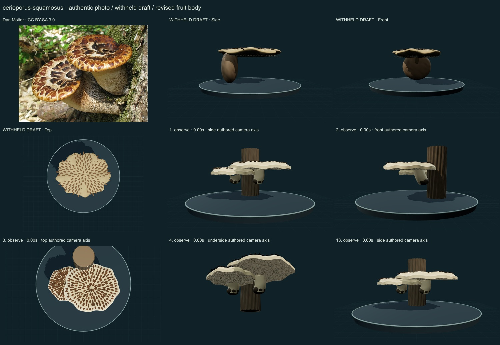
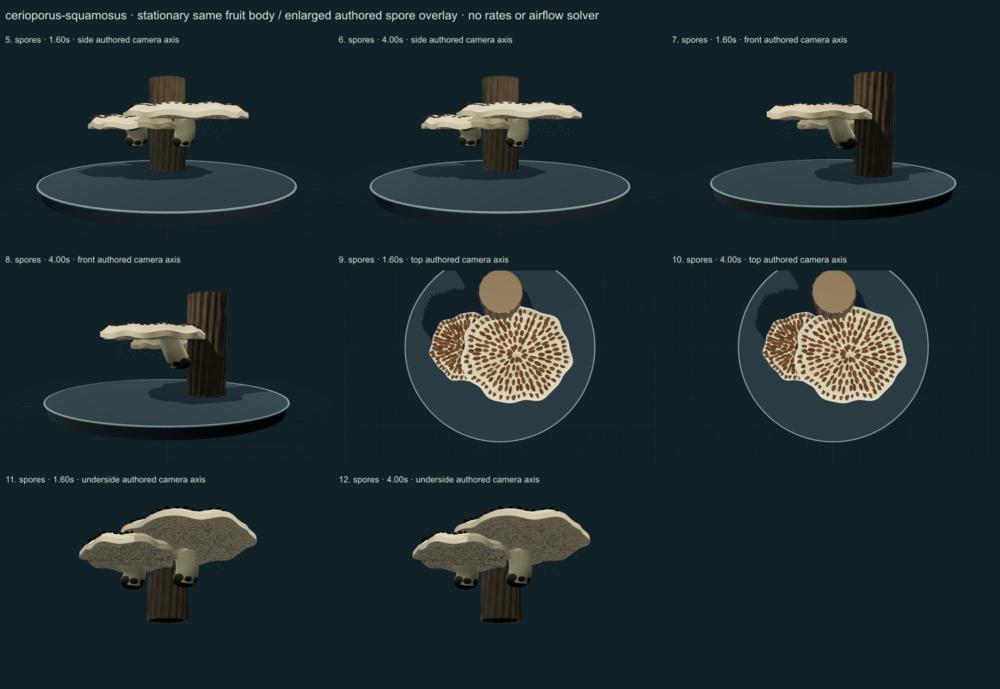

PhenoVoxel Archive · v0.6.25 · October25,2026
Dryad’s saddle
293 records after verified publication. Seven saved drafts held;257 missing to550, including250 without drafts. Release register.
Actual Dan Molter Ohio/elm photograph compared with Naturalis under Polyporus squamosus and specialist Kew/Index Fungorum name records. The source-labelled photograph is not a new specimen determination.
Dan Molter · CC BY-SA 3.0. Source-labelled real organism reference; preparation, life-stage, location and selected phenotype do not establish all species variation or measured 3D anatomy. Resized inside 1000 px, flattened and JPEG encoded; no generative alteration.
Exact creator, source/license links and original/derivative checksums are retained in the linked data. The2025 Hericium paper is linked as a scholarly reference; its NC-ND figures are not reused. Additional copyrighted treatments/figures are not redistributed or sampled into material textures.
Two selected depressed caps have shorter thick eccentric stems, dark basal cues, rolled thinner margins and a coarse angular lower pore field. Polyporus squamosus is a synonym, not an additional species.
Buff caps bear varied raised brown radial/concentric scale patches. Numeric pore relief, muted stem pigment and dark bases remain on the same geometry across display actions.
Remaining: Scale placement still has visible concentric regularity, depressions and rolled margins are simplified, and the cap/stipe proportions are unmeasured. Decurrent pore architecture, fine hyphae, tissue optics and host attachment remain partial.
Stationary retained caps and stipes with an enlarged spore-drift illustration; no growth, wood-decay physiology or measured discharge.
Partly stylized, unmeasured original educational reconstructions. Fine anatomy, age variation, tissue optics, dimensions and physiology remain incomplete. Enlarged spore dots are a teaching overlay with authored timing, not measured release, Buller-drop mechanics or an airflow solver. No independent specialist validation, scientific certification or accuracy percentage.
The underside camera temporarily hides contextual platform/grid. Contextual wood is authored support artwork, not a scanned host or proof of host specificity.
13 actual final nonblank main-viewer states individually inspected on two labelled sheets, with authentic photograph and withheld-draft comparison. Whole-body side/front/top, unobstructed underside and two representative overlay times per axis; qualitative author assessment, not independent specialist review.


Partly stylized, unmeasured original educational reconstructions. Fine anatomy, age variation, tissue optics, dimensions and physiology remain incomplete. Enlarged spore dots are a teaching overlay with authored timing, not measured release, Buller-drop mechanics or an airflow solver. No independent specialist validation, scientific certification or accuracy percentage. Prior285 species objects, including credited wolf/tiger meshes, are unchanged. Species-complex caveats remain visible. Recorded occurrences are not native ranges; legacy Protista/Monera are reporting conveniences.
Original geometry/controller MIT. Authentic photo portions retain the exact credited license; model-only frames contain original rendered geometry.
Exact findings, source scopes and screenshot hashes